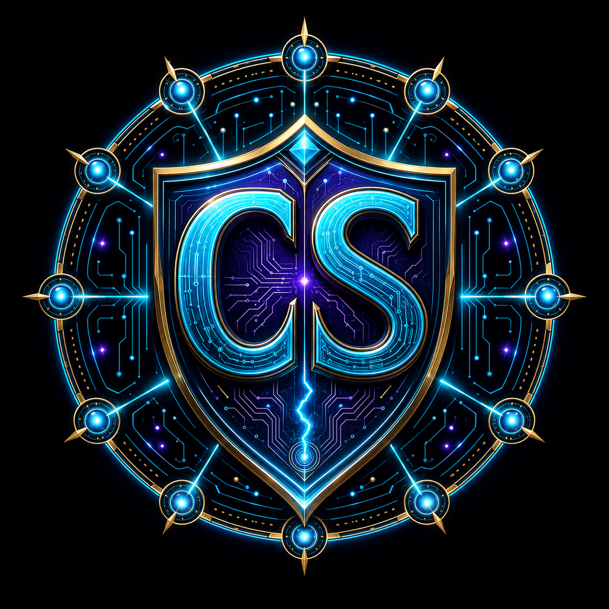

אבטחת סייבר
ארכיטקטורה מאובטחת, הקשחה, ניתוח סיכונים והדרכה מעשית.

CYBER SHAMANICCODE · SECURE · EVOLVE בניית הצעה ↗מחבר בין אבטחת סייבר, בינה מלאכותית, אוטומציה וחכמה — כדי לבנות כלים שמגינים, מבהירים ומקדמים.
Technology becomes powerful
when guided by wisdom.
FROM COMPLEXITY TO CLARITY
Cyber Shamanic הוא מרחב יצירה שבו קוד פוגש תודעה, הגנה פוגשת אחריות, ומערכות מורכבות הופכות לכלים ברורים שאפשר להפעיל. המטרה היא לרתום את החומר לשירות הרוח.
ארכיטקטורה מאובטחת, הקשחה, ניתוח סיכונים והדרכה מעשית.
סוכנים, מאגרי ידע ומערכות חכמות המתרגמות מידע לפעולה.
תהליכים שמפחיתים עומס ומחברים מערכות, אנשים ונתונים.
איסוף, אימות וחיבור נקודות מתוך מידע גלוי ובגבולות אתיים.
אתרים, כלים וממשקים המעוצבים סביב מסר ברור ותוצאה.
מאגרים, תיעוד וכלים שאנשים יכולים להבין, לשפר ולהעביר.
BUILD YOUR PROJECT
בחר שירותים לפי קטגוריה, ראה אומדן מחיר בזמן אמת ושלח הודעת WhatsApp מסודרת עם כל פרטי הפרויקט.
פתיחת בונה ההצעה ↗